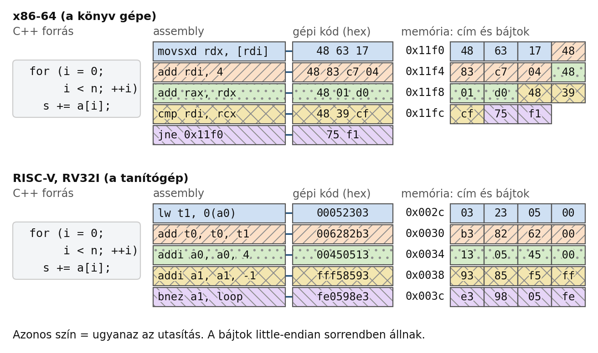
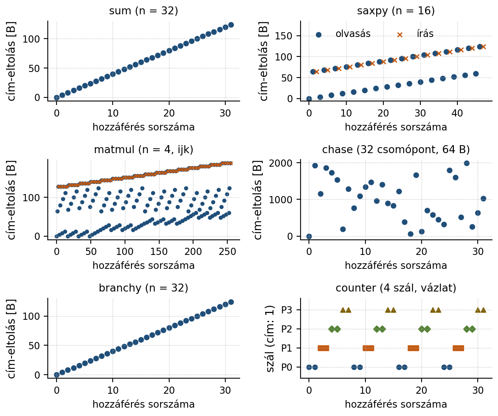

Ugyanazt a háromsoros ciklust, a saxpy műveletet
()
lefordítjuk kétféle kapcsolóval, és lemérjük:
import sys; sys.path.insert(0, "code")
from archkit import perf
_, rows = perf.read_bench_csv("figures/data/ca021-optimalizalasi-szintek.csv")
t = {r["build"]: r["median_ns_per_elem"] for r in rows
if r["kernel"] == "saxpy_plain" and r["x_bytes"] == 16 * 1024}
print(f"-O0: {t['O0']:.3f} ns/elem -O2: {t['O2']:.3f} ns/elem "
f"arány: {t['O0'] / t['O2']:.1f}")-O0: 0.981 ns/elem -O2: 0.221 ns/elem arány: 4.4Ugyanaz a forrás, ugyanaz a gép, mégis több mint négyszeres a
különbség (i5-13400F, P-mag, g++ 15.2, 16 KiB-os tömbök,
2026-11-25). A fordító két kapcsolóra két eltérő utasítássorozatot állít
elő, és a processzor azt hajtja végre, nem a C++-sorokat. Ez az
alfejezet végigköveti a programot a forrástól a végrehajtásig, majd
bemutatja azt a hat kis programot, amelyre az egész könyv épít.
A forrásszövegből előbb emberi olvasásra alkalmas assembly (gépközeli utasítások szöveges alakja) lesz, abból gépi kód (bináris utasításszavak), amely a program indulásakor a memóriába kerül. A processzor onnan olvassa az utasításokat egyenként, és mindegyiken ugyanazt a háromlépéses ciklust hajtja végre: lehívja, dekódolja, végrehajtja.

Az ábrán az azonos szín ugyanazt az utasítást jelöli. Figyeld meg: az x86-os utasítások 2–4 bájtosak és nem igazodnak négybájtos határokhoz, a RISC-V utasításai egyformán 4 bájtosak.
A példaprogram két fájlból áll; a sum kernel külön
fordítási egységben van, hogy a fordító ne olvaszthassa a hívóba.
// sum.cpp
#include <cstddef>
#include <cstdint>
std::int64_t sum(const std::int32_t* a, std::size_t n) {
std::int64_t s = 0;
for (std::size_t i = 0; i < n; ++i) s += a[i];
return s;
}// main.cpp
#include <cstddef>
#include <cstdint>
#include <cstdio>
std::int64_t sum(const std::int32_t* a, std::size_t n);
int main() {
const std::int32_t x[] = {3, 1, 4, 1};
std::printf("%lld\n", static_cast<long long>(sum(x, 4)));
}Definíció. A fordítási lánc lépései:
#include és makró direktívákat.g++ -std=c++20 -E sum.cpp -o sum.ii # csak előfeldolgozás
g++ -std=c++20 -O2 -S -masm=intel sum.cpp # assembly: sum.s
g++ -std=c++20 -O2 -c sum.cpp main.cpp # objektumfájlok: sum.o, main.o
g++ main.o sum.o -o prog # szerkesztés
wc -l sum.cpp sum.ii; nm -C sum.o; nm -C main.o; ./prog
nm -C prog | grep -E ' T (sum|main)' 8 sum.cpp
537 sum.ii
545 total
0000000000000000 T sum(int const*, unsigned long)
0000000000000000 r .LC0
0000000000000000 r .LC1
0000000000000000 T main
U __printf_chk
U __stack_chk_fail
U sum(int const*, unsigned long)
9
0000000000001080 T main
00000000000011e0 T sum(int const*, unsigned long)Az előfeldolgozó a nyolc sorból 537 sort csinált: a fejlécek
tartalmát is beillesztette. Az nm a szimbólumokat listázza
(-C: olvasható C++-nevekkel): a T a kódban
definiált függvény, az U olyan hivatkozás, amelyet a
szerkesztőnek kell feloldania. A main.o még nem tudja, hol
van a sum; a kész prog fájlban már van címe
(0x11e0). A betöltő ehhez futáskor egy véletlen bázist ad
(helyfüggetlen kód), és a dinamikus szerkesztő a C könyvtárat is
betölti. Ezeket a részleteket az Operációs rendszerek könyv
tárgyalja.
Definíció. Az utasítás egy elemi gépi művelet. Operandusai az adatok, amelyeken dolgozik: lehetnek regiszterek (a processzorban lévő kevés, nagyon gyors tárolóhely), memóriacímen lévő értékek vagy az utasításba kódolt konstansok. A memóriacím egy bájt sorszáma a memóriában.
Az -O2 kapcsolóval a sum ennyi lett (a
g++ kimenete a direktívák nélkül):
_Z3sumPKim:
endbr64
test rsi, rsi # n == 0?
je .L4
lea rcx, [rdi+rsi*4] # rcx = a tömb vége
xor eax, eax # s = 0
.L3:
movsxd rdx, DWORD PTR [rdi] # rdx = *a, előjelkiterjesztve 64 bitre
add rdi, 4 # a következő elem címe
add rax, rdx # s += rdx
cmp rdi, rcx # vége?
jne .L3
ret
.L4:
xor eax, eax
retA hívási konvenció szerint az első argumentum (a) az
rdi, a második (n) az rsi
regiszterben érkezik, az eredmény rax-ban távozik. A
[rdi] jelölés azt jelenti: az rdi-ben lévő
címen tárolt érték. Az i változó eltűnt: a fordító
a címet lépteti elemméretenként (4 bájt). Az endbr64
védelmi jelölő utasítás, a sum munkájában nincs
szerepe.
Ugyanez a ciklus -O0-val:
.L3:
mov rax, QWORD PTR -8[rbp] # i betöltése a veremből
lea rdx, 0[0+rax*4]
mov rax, QWORD PTR -24[rbp] # a betöltése
add rax, rdx
mov eax, DWORD PTR [rax] # a[i]
cdqe
add QWORD PTR -16[rbp], rax # s += ... (olvas és ír)
add QWORD PTR -8[rbp], 1 # ++i (olvas és ír)
.L2:
mov rax, QWORD PTR -8[rbp] # i < n ?
cmp rax, QWORD PTR -32[rbp]
jb .L3Az -O0 minden változót a veremben (a memóriában) tart,
és minden C++-utasításhoz külön olvassa-írja:
| változat | utasítás elemenként | memóriaolvasás | memóriaírás |
|---|---|---|---|
-O0 |
11 | 7 | 2 |
-O2 |
5 | 1 | 0 |
A táblázat nem időt mér, de jól mutatja, miért lassabb az
-O0: több utasítás és kilencszer annyi memóriaművelet. Az
-O2 a változókat regiszterben tartja.
A processzor vezérlése egy egyszerű körforgás. Két belső regisztere van hozzá: a programszámláló (program counter, PC) a következő utasítás címe, az utasításregiszter (instruction register, IR) a lehívott utasításszó.
rd, forrásregiszterek
rs1, rs2, konstans imm) és a
forrásregiszterek kiolvasása.rd-be, végül
,
elágazásnál pedig, ha a feltétel teljesül,
.A harmadik lépés után a ciklus elölről kezdődik. Mivel a PC csak az utasítás végén változik, az elágazás egyszerűen más következő címet ír bele. Ez a modell egyszerre egy utasítással foglalkozik; a valódi processzorok a fázisokat átfedik (A futószalag elve: átbocsátás és késleltetés), de a látható eredmény ugyanaz.
Az ábrán kövesd, melyik regiszter változik az egyes fázisokban: lehíváskor csak az IR, dekódoláskor semmi látható, végrehajtáskor a célregiszter és a PC.
Továbbvitt eredmény. A lehívás–dekódolás–végrehajtás ciklus a processzor vezérlési váza: ezt programozza le a Kódolás bitszinten és egy RISC-V-értelmező, valósítja meg hardverben Az adatút elemei és összeállítása, és bontja órajelciklusokra a Többciklusú adatút állapotgéppel.
Hat kis programot, kernelt (egy feladat magját alkotó ciklust) használunk végig. Egy-egy mást tesz próbára:
std::int64_t sum(const std::int32_t* a, std::size_t n) {
std::int64_t s = 0;
for (std::size_t i = 0; i < n; ++i) s += a[i];
return s;
}
void saxpy(float a, const float* x, float* y, std::size_t n) {
for (std::size_t i = 0; i < n; ++i) y[i] = a * x[i] + y[i];
}
void matmul(const double* a, const double* b, double* c, std::size_t n) {
for (std::size_t i = 0; i < n; ++i)
for (std::size_t j = 0; j < n; ++j)
for (std::size_t k = 0; k < n; ++k) c[i * n + j] += a[i * n + k] * b[k * n + j];
}
struct alignas(64) Node { Node* next; };
Node* chase(Node* p, std::size_t steps) {
for (std::size_t i = 0; i < steps; ++i) p = p->next;
return p;
}
std::int64_t branchy(const std::int32_t* a, std::size_t n, std::int32_t t) {
std::int64_t s = 0;
for (std::size_t i = 0; i < n; ++i)
if (a[i] >= t) s += a[i];
return s;
}
void counter(std::atomic<std::uint64_t>& c, std::size_t n) { // több szál hívja
for (std::size_t i = 0; i < n; ++i) c.fetch_add(1, std::memory_order_relaxed);
}Az atomi (std::atomic) művelet azt
garantálja, hogy a szálak egyetlen növelése sem vész el. A
code/bench/ mérőprogramjai ugyanezeket a magokat
használják, néhány kisebb eltéréssel: __restrict jelzés a
mutatókon, a matmul részösszege helyi változóban, a
chase ciklusa tizenhatszorosan kibontva, a mért függvények
noinline jelzéssel.
| Kernel | Mit vizsgálunk vele | Memóriaminta | Fő alfejezetek |
|---|---|---|---|
sum |
lokalitás, utasításszintű párhuzamosság, redukció | sorban olvasás | Lokalitás és a memóriahierarchia |
saxpy |
sávszélesség, SIMD | két tömb sorban, egyiket írja | A fordító kimenete: C-ből assembly |
matmul |
gyorsítótár, roofline | három tömb, nagy lépésközzel | Cache-szimulátor és cache-tudatos programozás |
chase |
memóriakésleltetés, címfordítás | függő, véletlen lánc | Memóriavezérlő, sávszélesség és mérés |
branchy |
elágazásbecslés | sorban, adatfüggő ugrás | Statikus becslés és a kétbites számláló |
counter |
koherencia, atomik, zárak | több szál, egy cím | A koherencia ára: ping-pong és false sharing |
Az alábbi ábra a kernelek hozzáférési mintáját mutatja: vízszintesen
a memóriaműveletek sorszáma, függőlegesen a cím. Az első öt panel a
RISC-V értelmező tényleges nyomából készült, a counter
panel vázlat.

A sum és a branchy pontjai egyformák, mégis
eltérően viselkednek: a különbség az elágazásban van. A
chase címei nem jósolhatók, minden lépés az előző
eredményétől függ.
Továbbvitt eredmény. A futó kernelkészlet
(sum, saxpy, matmul,
chase, branchy, counter) a könyv
közös példája; a Végrehajtási idő, CPI és a
vasegyenlet, a Benchmarkolás: mérni
tanulni, a A fordító kimenete: C-ből
assembly, a Lokalitás és a
memóriahierarchia, a Cache-szimulátor és
cache-tudatos programozás és az AVX és NEON a
gyakorlatban ezt viszi tovább.
Futtassuk le fejben a RISC-V sum ciklus első körét az
x = {3, 1, 4, 1} tömbre. Kiinduláskor a0 (a
tömb címe)
0x10000, a1 (elemszám)
,
t0 (összeg)
.
| PC | IR (hex) | utasítás | hatás | új PC |
|---|---|---|---|---|
0x2c |
00052303 |
lw t1, 0(a0) |
t1
[0x10000]
|
0x30 |
0x30 |
006282b3 |
add t0, t0, t1 |
t0
|
0x34 |
0x34 |
00450513 |
addi a0, a0, 4 |
a0
0x10004 |
0x38 |
0x38 |
fff58593 |
addi a1, a1, -1 |
a1
|
0x3c |
0x3c |
fe0598e3 |
bnez a1, loop |
: ugrás | 0x2c |
Egy kör öt utasítás. A ciklus előtt a program ötöt hajt végre (a cím
betöltése két utasítással, li a1, 4, a hívás és
li t0, 0), utána nyolcat (mv,
ret, majd a kiírás és a kilépés hat utasítása), ezért
összesen
;
esetén 33.
Az archkit.riscv lefordítja a RISC-V programot (a
bevezető li, la, bnez
álutasításokat valódi utasításokra alakítja), majd lépésenként
végrehajtja.
from archkit import riscv, trace
m = riscv.run(riscv.sum_src([3, 1, 4, 1]))
for pc in range(0x28, 0x48, 4):
print(f"{pc:#04x} {m.program.words[pc // 4]:08x} {m.program.source[pc]}")
print(trace.format_trace(m.trace, 5, 5))
print(f"N_I = {len(m.trace)}, eredmény: {m.reg('s0')}")0x28 00000293 li t0, 0
0x2c 00052303 lw t1, 0(a0)
0x30 006282b3 add t0, t0, t1
0x34 00450513 addi a0, a0, 4
0x38 fff58593 addi a1, a1, -1
0x3c fe0598e3 bnez a1, loop
0x40 00028513 mv a0, t0
0x44 00008067 ret
# pc utasítás hatás
5 0000002c lw t1, 0(a0) t1=0x3 M[0x10000]
6 00000030 add t0, t0, t1 t0=0x3
7 00000034 addi a0, a0, 4 a0=0x10004
8 00000038 addi a1, a1, -1 a1=0x3
9 0000003c bnez a1, loop ugrik → 0x2c
N_I = 33, eredmény: 9A nyom (trace) a végrehajtott utasítások listája a hatásukkal; a későbbi fejezetek futószalag- és cache-modelljei ezt kapják bemenetül. Most nézzük meg mind az öt egyszálú kernelt: hány utasítást, betöltést, tárolást és elágazást hajtanak végre kis méretben.
x = list(range(1, 65))
data = riscv.branchy_data(64, seed=1)
cases = {
"sum": (riscv.sum_src(x), lambda m: m.reg("s0") == sum(x)),
"saxpy": (riscv.saxpy_src(3, x, x), lambda m: m.read_words("y", 64) == [4 * v for v in x]),
"matmul": (riscv.matmul_src(8), None),
"chase": (riscv.chase_src(64, 64), lambda m: m.reg("s0") == m.address("list")),
"branchy": (riscv.branchy_src(data), lambda m: m.reg("s0") == sum(v for v in data
if v >= 128)),
}
print("kernel N_I load store br ellenőrzés")
for name, (src, check) in cases.items():
m = riscv.run(src)
mix = trace.mix(m.trace)
ok = "n.a." if check is None else ("rendben" if check(m) else "HIBA")
print(f"{name:8} {len(m.trace):5} {mix.get('load', 0):5} {mix.get('store', 0):5}"
f" {mix.get('br', 0):5} {ok}")kernel N_I load store br ellenőrzés
sum 333 64 0 64 rendben
saxpy 587 128 64 64 rendben
matmul 10469 1536 512 584 n.a.
chase 203 64 0 64 rendben
branchy 368 64 0 128 rendbenA számok megfelelnek a szerkezetnek: a matmul
belső körében körönként három betöltés
(,
,
)
és egy tárolás van, a chase 64 lépése 64 betöltés, és mivel
a lánc egyetlen körből áll, 64 lépés után visszaér a kiindulópontra.
t1 és a PC csak a végrehajtásnál
változik.10, 20. Jósold meg
-t
(23) és a kiírt eredményt (30), majd lépj a végére a csúszkával.bnez? (Az
alapértelmezett tömbnél a 25.-nél.)-S, vagy Compiler Explorer [S-GODBOLT]).-O0 assemblyből vonsz le
teljesítménykövetkeztetést. Ok: ott minden változó a
memóriában van. Javítás: a méréshez és elemzéshez
-O2-t (vagy a tényleges kapcsolókat) használj.lw t1, 0(a0) után
t1-ben a címet várod. Ok: a zárójeles alak
a címen lévő értéket jelenti. Javítás: cím:
a0, tartalom:
.addi a0, a0, 1, a program igazítatlan hozzáférés hibával
áll le. Ok: a cím bájtot számol, egy
int32_t 4 bájt. Javítás:
addi a0, a0, 4.nm kimenetében az U?#include beillesztését; (b) a sum címének
beírását a main hívásába; (c) a C++-ciklus utasításokra
bontását; (d) a program memóriába másolását?sum programnál
elemre? Hány betöltés és hány elágazás van benne?a0, a1,
t0).-O0 ciklus 11, az
-O2 5 utasítás elemenként, a mért
saxpy-időarány mégis kb. 4,4. Miért nem várhatod, hogy az
időarány egyezzen az utasításarányokkal? (Gondolj a
memóriaműveletekre.)branchy kernelt a
riscv.branchy_data(256, seed=1) adatokon elágazásos és
elágazásmentes (branchless=True) változatban. Hasonlítsd
össze
-t
és az elágazások számát, és magyarázd meg a különbséget.sw) a háromfázisú
ciklus melyik lépése mit csinál, és mi nem történik? Ellenőrizd
a saxpy nyomán, hogy egy tárolásnak nincs
célregisztere.A forrás az előfeldolgozón, fordítón, assembleren és szerkesztőn át
lesz futtatható fájl, amelyet a betöltő a memóriába tölt. Az utasítás
regisztereken, memóriacímen lévő értékeken és konstansokon dolgozik;
ugyanazt a C++-ciklust az -O0 elemenként 11, az
-O2 5 utasításra fordítja. A processzor a lehívás
(),
dekódolás és végrehajtás ciklusát ismétli; a PC a végrehajtás végén lép
tovább vagy ugrik. A RISC-V sum program
utasítást hajt végre, ebből
betöltés. A mért saxpy az -O2 kapcsolóval a
könyv gépén kb. 4,4-szer gyorsabb, mint -O0-val, ezért
teljesítményt csak optimalizált kódon vizsgálunk. A futó kernelek:
sum (lokalitás, párhuzamosság), saxpy
(sávszélesség, SIMD), matmul (cache), chase
(késleltetés), branchy (elágazásbecslés),
counter (koherencia, atomik).
chase, elágazásbecsléshez a
branchy.1. (a) előfeldolgozó; (b) szerkesztő; (c) fordító; (d) betöltő.
2. ; 100 betöltés és 100 elágazás (körönként egy-egy).
3. Kiindulás: a0
0x10004, a1
,
t0
.
| PC | hatás | a0 |
a1 |
t0 |
|---|---|---|---|---|
0x2c |
t1
|
0x10004 |
3 | 3 |
0x30 |
t0
|
0x10004 |
3 | 4 |
0x34 |
a0 lép |
0x10008 |
3 | 4 |
0x38 |
a1 csökken |
0x10008 |
2 | 4 |
0x3c |
ugrás 0x2c-re |
0x10008 |
2 | 4 |
4. Az utasítások nem egyforma drágák, és a
processzor több független utasítást egyszerre hajt végre. Az
-O0 kódban a változók a memórián át adódnak tovább: egy
érték beírása után azonnal visszaolvassák, ez sorba fűzi a műveleteket
(Memóriafüggőségek: load/store queue és
függőségbecslés). Ezt itt feltételezésként mondjuk; a
saxpy mérés önmagában csak az időket mutatja.
data = riscv.branchy_data(256, seed=1)
for branchless in (False, True):
m = riscv.run(riscv.branchy_src(data, branchless=branchless))
mix = trace.mix(m.trace)
print(f"elágazásmentes={branchless}: N_I = {len(m.trace)}, elágazás = {mix['br']}, "
f"összeg = {m.reg('s0')}")elágazásmentes=False: N_I = 1420, elágazás = 512, összeg = 24080
elágazásmentes=True: N_I = 2062, elágazás = 256, összeg = 24080Az elágazásos változat körönként két elágazást hajt végre (az adatfüggőt és a ciklusvégit), és az összeadást kihagyja, ha az elem a küszöb alatt van. Az elágazásmentes változatban az összehasonlításból maszk készül, így az adatfüggő ugrás eltűnik: kevesebb elágazás, de több utasítás. Hogy melyik gyorsabb, azt az elágazásbecslő dönti el (Statikus becslés és a kétbites számláló).
Lehíváskor ugyanúgy az IR-be kerül a szó; dekódoláskor
rs1 (cím alapja) és rs2 (a tárolandó adat)
olvasódik; végrehajtáskor a cím
rs1
imm, a memória megkapja az adatot, a PC 4-gyel nő.
Regiszterbe nem íródik vissza semmi.
m = riscv.run(riscv.saxpy_src(2, [1, 2], [3, 4]))
stores = [i for i in m.trace if i.kind == "store"]
print([(i.text, i.rd) for i in stores], m.read_words("y", 2))[('sw t1, 0(a2)', None), ('sw t1, 0(a2)', None)] [5, 8]